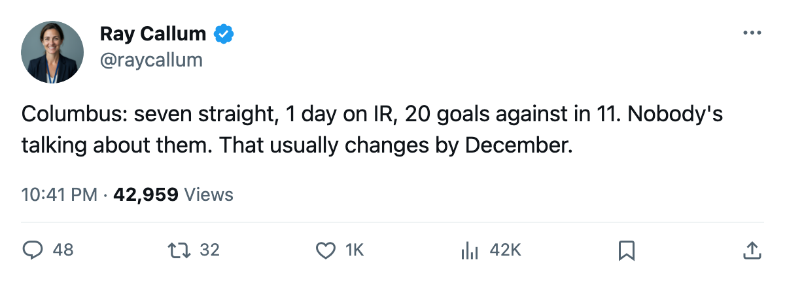
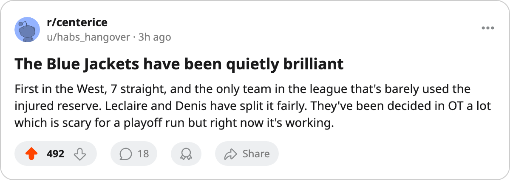

Numbers Game: Columbus Has Won 7 Straight and Lost 1 Day to Injury
The Blue Jackets sit first in the West with 19 points, a 7-game streak, and the lowest medical bill in the league.
 Ray CallumSenior correspondent · Home Ice Network
Ray CallumSenior correspondent · Home Ice Network
 Columbus Blue Jackets are 5-1-1 through 11 games, first in the West, with exactly 1 day lost to injured reserve all season. The league average across 30 clubs is 38 days; Columbus has lost less than 3% of that.
Columbus Blue Jackets are 5-1-1 through 11 games, first in the West, with exactly 1 day lost to injured reserve all season. The league average across 30 clubs is 38 days; Columbus has lost less than 3% of that.
The 7-game winning streak runs from their 4th game onward. They lost one overtime game early (to  St. Louis Blues), won their first two, then dropped their first regulation loss and have not looked back. The conference table has them at 19 points with 4 overtime wins mixed into 9 total victories, which means the streak has often been decided in the extra frame.
St. Louis Blues), won their first two, then dropped their first regulation loss and have not looked back. The conference table has them at 19 points with 4 overtime wins mixed into 9 total victories, which means the streak has often been decided in the extra frame.
At home, Columbus is 7-1. The single home loss is the overtime loss to St. Louis Blues. They have not been beaten in regulation inside their own building. On the road they are 2-1, and one of those wins came in overtime against  Chicago Blackhawks on October 29.
Chicago Blackhawks on October 29.
Columbus has allowed 20 goals in 11 games, the fewest in the West over a similar span.  Pascal Leclaire91 has started 7 of those 11,
Pascal Leclaire91 has started 7 of those 11,  Marc Denis90 the other 4.
Marc Denis90 the other 4.
The injury list backs that up. Columbus Blue Jackets filed 6 injury spells this season. Every one was brief, none carried a named body part that lingered, and the total cost across all 6 is 1 day. Leclaire himself appears in the ledger with an unnamed knock that cost zero days.
Tomorrow they visit  San Jose Sharks for the second meeting of the season. San Jose won the first, 3-2 in overtime. San Jose Sharks are 4-3-2 and have allowed 25 goals in 10 games, the 9th-lowest total in the conference.
San Jose Sharks for the second meeting of the season. San Jose won the first, 3-2 in overtime. San Jose Sharks are 4-3-2 and have allowed 25 goals in 10 games, the 9th-lowest total in the conference.
| club | GP | W | OTW | L | OTL | pts | GA | IR days |
|---|---|---|---|---|---|---|---|---|
| Columbus Blue Jackets | 11 | 5 | 4 | 1 | 1 | 19 | 20 | 1 |
 Dallas Stars Dallas Stars | 13 | 7 | 1 | 3 | 2 | 18 | 24 | 31 |
 Detroit Red Wings Detroit Red Wings | 12 | 7 | 1 | 3 | 1 | 17 | 28 | 88 |
| St. Louis Blues | 11 | 6 | 1 | 1 | 3 | 17 | 28 | 4 |
 Nashville Predators Nashville Predators | 11 | 5 | 3 | 2 | 1 | 17 | 30 | 29 |
Columbus does not lead on wins (Detroit Red Wings and Dallas Stars both have 7). The edge is fewer losses, fewer goals against, and the healthiest roster. In November, that is usually enough. In April, the league finds out if 4 overtime wins can carry a club through a series.

